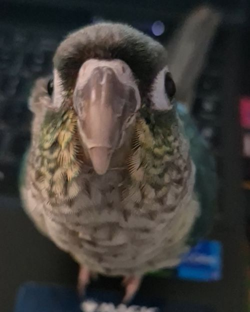

Kimberly Shirley
Frontend Developer
I’m Kimberly Shirley, a frontend developer based in Greenville, South Carolina. I specialize in building clean, responsive interfaces, dashboard systems, and thoughtful UI architecture. My work blends technical precision with clear visual structure, and I enjoy designing systems that scale — from CSS variable frameworks to Firebase‑driven applications.
Clean, responsive interfaces built with modern HTML, CSS/Sass, and JavaScript. Structured, accessible, and optimized for real‑world use.
Thoughtful interface layouts created in Figma, focused on clarity, usability, and visual balance across devices.
Logos, graphics, and photo edits crafted in Photoshop or Illustrator. Polished visuals that support your brand identity.
Custom dashboards and charts built with Chart.js and Firebase. Clear, intuitive displays that make complex data easy to understand.
I’m Kimberly "Kim" Shirley, a frontend developer based in Greenville, South Carolina. I specialize in building clean, responsive interfaces and thoughtful UI architecture. My work blends visual clarity with technical precision, and I enjoy creating systems that scale — from structured CSS layouts to data‑driven dashboards.
With a background in digital media and hands‑on technical support, I bring a practical understanding of how real‑world systems behave. That experience shapes the way I design and build interfaces: reliable, intuitive, and grounded in how users actually interact with technology.
I focus on:
I enjoy solving structural problems, organizing information clearly, and designing interfaces that feel effortless to use.
My approach is shaped by both design and technical troubleshooting: I think in systems and patterns, prioritize clarity and usability, then build interfaces that adapt across devices. I test and refine until the experience feels smooth and reliable.
Whether I’m designing a dashboard, structuring a layout, or debugging a tricky issue, I aim for solutions that are both elegant and practical.
I spend a lot of my free time learning, when my weird dog permits.

This is Zephyr, the green cheek conure. He loves screaming, walking across keyboards, and supervising me at all times. He’s very loud, opinionated, and absolutely convinced he’s helping.
Some of my other hobbies include video games, trading card games, Dungeons & Dragons, and occasionally archery.
I’m always interested in opportunities involving frontend development, data‑driven interfaces, and structured systems. If you have a project or vision you want to bring to life, I’d love to connect and share ideas.
Frontend developer blending UI design, system troubleshooting, and data‑driven development. Skilled in building responsive interfaces, visualizing complex information, and ensuring reliable user experiences through practical technical insight.
If you’d like to collaborate, ask questions, or talk about a project, feel free to reach out.